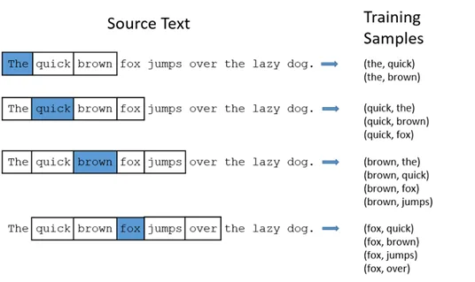
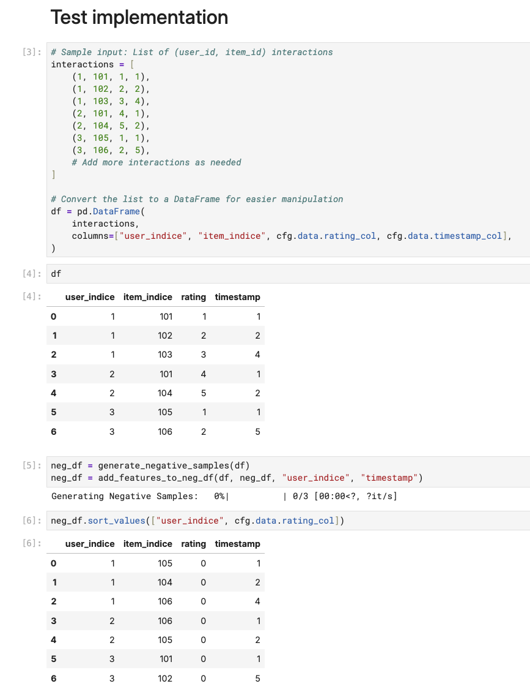
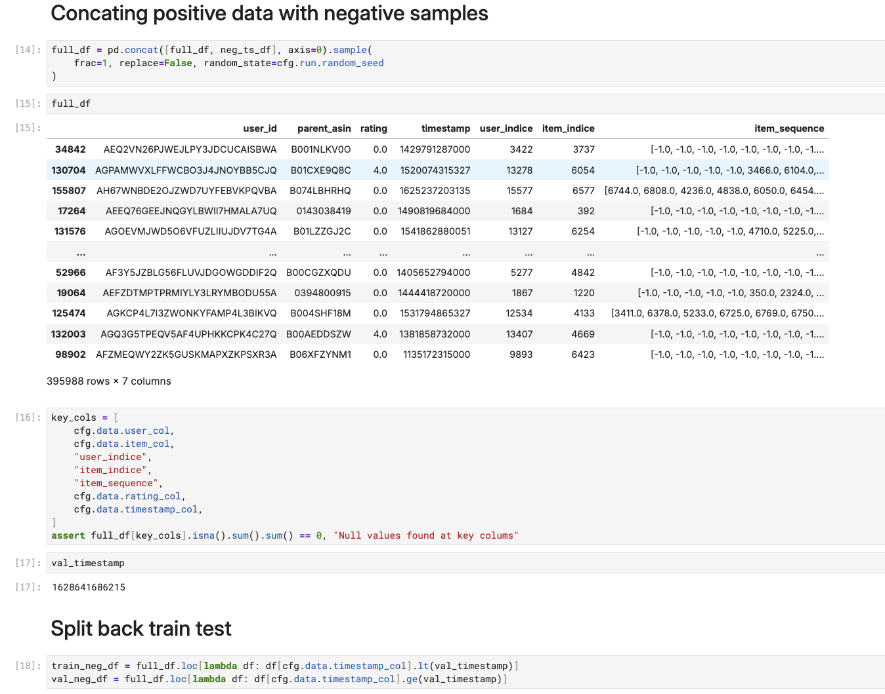

Introduction
In Chapter 2, we dug into our Amazon dataset and built a solid feature preprocessing pipeline. But we’re not ready to train any models yet. We’re missing something crucial: the labels that will teach our model the difference between what users want and what they don’t.
We already know which items users bought. So here’s a natural idea: let’s turn this into a sequence prediction problem. Show the model a user’s past actions, then ask it to predict what comes next.
If this idea of predicting next thing based on a sequence of things sounds familiar, then it’s expected. This is exactly what researchers in natural language processing figured out years ago. Take Word2Vec. It’s a simple but brilliant model that learns word relationships by studying which words hang out together. Word2Vec breaks a sentence into input-output pairs where the surrounding words are the input and the hidden target word is what you’re trying to predict.

At each step, we pick a target word along with its neighboring context to form a positive training example. How about the negatives? That’s where negative sampling comes in. Rather than letting the model see only context words that belong together, we throw in some randomly selected words from outside the context. This mix challenges the model, teaching it to learn the patterns of words that appear in similar contexts.
Now let’s apply this to our book dataset. When a user clicks, views, or buys something, that’s a clear positive signal. But what about the millions of items they never touch? Are these items bad, or did the user just never discover them? Negative sampling helps us figure this out. It gives the model examples of what a user probably won’t pick.
I personally find this analogy helpful: Training a recommendation model without negative samples is like teaching someone to recognize cats by only showing them cat pictures. They might think everything is a cat!
All code for this chapter is in notebooks/002-negative-sample.ipynb and src/negative_sampling.py in the project repository.
Negative Sampling Strategies
Random Sampling
Let’s start with the obvious approach: just pick random items the user hasn’t touched.
This is faily straightforward to code up. You grab all the items a user hasn’t interacted with, throw them in a hat, and pull out however many negatives you need. It’s fast, it’s unbiased, and it works.
But there’s a problem. Some of those “random” negatives might actually be items the user would love if they found them. There’s also another issue: the model might get biased toward popular items, since they show up in lots of positive pairs.
Popularity-Based Sampling
To deal with the above popularity biase, instead of picking negatives randomly, we sample them based on how popular they are in the dataset. This makes popular items get chosen as negatives more often.
Why does this work better? A popular item has a higher chance of being liked by any user than a random item. So when we use popular items as negatives, we’re creating harder training examples. We’re forcing the model to learn why this specific user didn’t interact with this popular item, even though lots of other people did.
This has a nice side effect. It helps the model learn beyond simple popularity bias. Instead of just recommending whatever’s trending, it has to figure out what makes items relevant for specific users.
The downside? It’s more work to implement. You need to track popularity statistics. And there’s a catch: popular items aren’t always bad choices for a user. Sometimes they’re popular because they’re actually good. So when we force a negative for a user-item pair, it might confuse the model.
Hard Negative Mining
This is the fancy approach. You need a model that’s already somewhat trained, and you use it to find items it thinks a user would like—but shouldn’t. These become your negative samples.
It’s like having a sparring partner who knows your weaknesses. The model keeps getting challenged by examples that are specifically designed to trip it up. As the model gets better, the negatives get harder, creating a virtuous cycle of improvement.
Sounds great, right? But it’s not always worth the extra effort, especially at the start. You need to train iteratively, which takes more time and compute. And there’s always the risk that you’re just teaching the model to overfit to its own biases.
For this project, we’ll use popularity-based negative sampling. It strikes a good balance between effectiveness and simplicity.
Let’s implement
The full implementation is here.
Function signature:
src/negative_sampling.py
def generate_negative_samples(
df,
user_col="user_indice",
item_col="item_indice",
label_col="rating",
neg_label=0,
seed=None,
) -> pd.DataFrame:
"""
Generate negative samples for a user-item interaction DataFrame.
The key insight: sample negative items proportional to their
popularity to create more challenging training scenarios.
Args:
df (pd.DataFrame): DataFrame containing user-item interactions.
user_col (str): Column name representing users.
item_col (str): Column name representing items.
label_col (str): Column name for the interaction label (e.g., rating).
neg_label (int): Label to assign to negative samples (default is 0).
seed (int, optional): Seed for random number generator to ensure reproducibility.
Returns:
pd.DataFrame: DataFrame containing generated negative samples.
"""Step 1: Calculate Item Popularity
# Calculate item popularity based on interaction frequency
item_popularity = df[item_col].value_counts()
# Convert to sampling probabilities to be used in the next step
popularity = item_popularity.values.astype(np.float64)
total_popularity = popularity.sum()
sampling_probs = popularity / total_popularityThis creates a probability distribution where more popular items have higher chances of being selected as negatives.
Step 2: Identify Negative Candidates
# Create user-item interaction mapping
user_item_dict = df.groupby(user_col)[item_col].apply(set).to_dict()
# For each user, find items they haven't interacted with
for user, pos_items in user_item_dict.items():
negative_candidates = all_items_set - pos_itemsWe make sure we only sample from items the user hasn’t already interacted with.
Step 3: Popularity-Weighted Sampling
# Create a mapping from item to index to quickly access item-related data.
items = item_popularity.index.values
item_to_index = {item: idx for idx, item in enumerate(items)}
# Sample negatives proportional to popularity
candidate_indices = [item_to_index[item] for item in negative_candidates_list]
candidate_probs = sampling_probs[candidate_indices]
candidate_probs /= candidate_probs.sum() # Normalize
sampled_items = np.random.choice(
negative_candidates_list,
size=num_neg,
replace=False,
p=candidate_probs
)This makes sure popular items are more likely to be selected as negatives, creating harder training examples.
In our implementation, we choose to have the same number of negative samples as positive samples. This helps us avoid dealing with imbalanced training data. But feel free to experiment with different ratios (you’ll need to update the implementation).
num_pos = len(pos_items) # Number of positive interactions
num_neg = min(num_pos, num_neg_candidates) # Match positive countLike other crucial parts of our pipeline, let’s test this with some mock data to make sure it works.

Adding Features to the generated negative samples
As you can see from the above output, we only have the item indice and the label. We also need to populate the new negative observations with the same features as the positive ones, i.e. the sequence of previously interacted items.
Since these negative samples come from the same user, we can use the same features as the positive ones. We just need to use the timestamp of the corresponding positive interaction.
def add_features_to_neg_df(pos_df, neg_df, user_col, timestamp_col, feature_cols=[]):
"""
Add features from positive samples to negative samples DataFrame.
Key insight: Negative samples should have realistic timestamps
that align with when the user was actually active.
"""
# Create pseudo timestamps for negatives
# This timestamp pseudo column is used as join key to the positive samples, ensuring that each negative
# maps to one positive sample and get the positive's features.
neg_df = neg_df.assign(
timestamp_pseudo=lambda df: df.groupby(user_col).cumcount() + 1
)
# Merge with corresponding positive interaction timestamps
neg_df = pd.merge(
neg_df,
pos_df.assign(
timestamp_pseudo=lambda df: df.groupby([user_col])[timestamp_col].rank(
method="first"
)
)[[user_col, timestamp_col, "timestamp_pseudo", *feature_cols]],
how="left",
on=[user_col, "timestamp_pseudo"],
).drop(columns=["timestamp_pseudo"])
return neg_dfConcat and re-split train-test
After adding features to the negative samples, we can combine them with the positive samples. Then we re-split the dataset based on the timestamp milestone we used in our original train-test split.

Recap
In this chapter, we tackled the tricky problem of implicit feedback in recommendation systems. Here’s what we covered:
- Why we need negative samples: Without them, our model would be like someone trying to recognize cats by only seeing cat pictures. We need examples of what users don’t want to create balanced learning.
- Three approaches to negative sampling: We looked at random sampling (simple but not very challenging), popularity-based sampling (our chosen approach that creates harder training scenarios), and hard negative mining (powerful but complex).
- Our popularity-based implementation: We built a system that samples negative items based on their popularity. This forces our model to learn why a user didn’t interact with popular items that others liked.
- Keeping things balanced: We generate equal numbers of positive and negative samples for each user (1:1 ratio) to avoid bias in either direction.
- Adding realistic features: We make sure our negative samples have proper timestamps and features that align with when users were actually active. This maintains temporal consistency for sequence modeling.
All code for this chapter is in notebooks/002-negative-sample.ipynb and src/negative_sampling.py in the project repository.
What’s Next?
With our balanced dataset of positive and negative samples, we’re ready to tackle model evaluation. In Chapter 4, we’ll set up our evaluation framework and experiment tracking with MLflow while implementing a baseline model along the way as an illustration. This will give us the foundation for systematic model development and comparison.
If you find this tutorial helpful, please cite this writeup as:
Quy, Dinh. (May 2025). Building Real-time RecSys Chapter 3 - Negative Sampling. dvquys.com. https://dvquys.com/projects/real-time-seq-recsys/c3/.